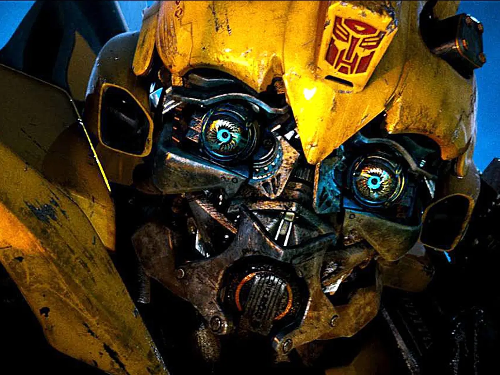

Hound là một chuyên gia kỹ thuật và là đặc công Autobot dũng cảm, giàu kinh nghiệm . Anh ta là một chiến binh hào hoa lao mình vào mọi nhiệm vụ mà không lo lắng gì hơn là một con vịt đáp xuống ao. Trong khi một số đồng loại của mình sẽ chạy trốn khỏi nguy hiểm, Hound không thể chịu đựng được điều đó. Anh ta chiến đấu như một tia lửa điện và nhanh chóng rút bất kỳ khẩu súng nào trong số rất nhiều khẩu súng của mình. Và trong khi xu hướng chuyển từ súng này sang súng khác liên tiếp trong một trận chiến thường khiến anh ta thiếu vũ khí và đạn dược, thì lòng dũng cảm và sự tháo vát của Hound không bao giờ bị nghi ngờ. Điều duy nhất có thể ảnh hưởng đến Hound là mất đi một người bạn. Tính cách huyên náo của anh ta che giấu một 'bot Sparked nhẹ nhàng, bất chấp những tranh cãi và cãi vã, yêu các Autobot và chỉ huy của mình thậm chí còn hơn cả yêu một tiếng ầm ầm. Chính tình yêu dành cho đồng đội đã khiến anh ấy trở thành một chiến binh hiệu quả. Anh ta sẽ đối đầu với toàn bộ quân đội Decepticon nếu anh ta phải làm vậy, và anh ta sẽ sớm gục ngã hơn là bỏ rơi đồng minh của mình trên chiến trường. Nói tóm lại, không có nhiệm vụ nào mà anh ta không nhận... ngoại trừ có thể là một nhiệm vụ không cho anh ta cơ hội tiêu diệt ít nhất một vài Decepticons.
Hound là một trong số các Autobot đã ẩn náu trên Trái đất sau khi Nghĩa trang Gió bắt đầu săn lùng các Autobot. Hound vui mừng khôn xiết khi Optimus Prime trở lại với những Autobot còn sống sót. Mặc dù vui mừng vì các Autobot lại là một đội, nhưng Hound bày tỏ sự chán ghét vô cùng của mình đối với con người sau sự phản bội của họ. Anh ta không hài lòng với những bài haiku bảo vệ nhân loại của Drift , và suýt nữa đã ra đòn với anh ta trước khi cố gắng nổ súng vào Cade Yeager , con gái anh ta là Tessa và bạn trai của cô ấy là Shane. Đêm đó, Hound đã tỉnh táo khi Optimus hỏi liệu có dấu hiệu của bất kỳ Autobot nào khác còn sống sót hay không, và nhờ Cade đã sửa đổi máy bay không người lái của Nghĩa trang Gió, các Autobot đã biết về một cuộc tấn công vào Ratchet, cũng như cái chết của Leadfoot . Hound rất buồn khi biết về số phận của bạn mình, và chào người đồng đội đã ngã xuống của mình, cay đắng nguyền rủa những kẻ tấn công mình là "những kẻ man rợ". Việc mất Leadfoot đã giúp thuyết phục Hound tham gia vào sứ mệnh thâm nhập vào KSI của Cade.
Tuy nhiên, các Autobots lại phải chịu một đòn khác khi họ biết về cái chết của Ratchet và sau đó là nấu chảy nguyên liệu thô. Hound vui vẻ tham gia vào cuộc tấn công tức giận của Optimus vào KSI. Sau khi chiến đấu vượt qua một số phòng và cơ sở, Autobots gặp Brains đang bị giam cầm , người mà Hound đã dành thời gian để giải thoát khỏi tình trạng khó khăn của mình. Hound rất muốn giết Joshua Joyce vì những tội ác mà anh ta đã gây ra, nhưng sau một bài giảng về việc Autobots giờ đây chẳng còn ý nghĩa gì đối với nhân loại, Optimus lặng lẽ ra lệnh rút lui, trước sự thất vọng của Hound và Brains. Các Autobot chạy trốn khỏi KSI, chỉ để bị truy đuổi bởi Galvatron và Stinger . Các Autobot sau đó đã bị tách khỏi thủ lĩnh của chúng và do đó không thể cứu Optimus và Tessa khỏi Lockdown.
Các Autobots, Cade và Shane đã mạo hiểm đến Chicago và bí mật trốn lên tàu của Lockdown (mặc dù Hound thừa nhận đó có thể là một ý tưởng tồi). Sau khi cảnh báo cả nhóm về những cái bẫy không thể tránh khỏi của Lockdown, Hound đã phải tích cực thúc đẩy Crosshairsgiúp giải cứu Optimus và Tessa. Hound phụ trách các Autobots và dẫn dắt họ tìm kiếm Optimus, giao cho Cade tìm kiếm Optimus và Tessa trong khối ô. Cuối cùng, cả nhóm tìm thấy căn hầm được bảo mật cao của Lockdown, nơi Hound có cuộc chạm trán ghê tởm với một dạng sống ngoài hành tinh. Bất chấp sự vô hại tương đối của sinh vật, Hound không thể tìm thấy nó trong anh ta để để nó tồn tại và nhanh chóng tiêu diệt nó. Vào thời điểm đó, Optimus đã có mặt trong một phòng giam được biết đến, và ra lệnh cho Hound chỉ huy con tàu riêng biệt cập cảng với khu phòng giam của Lockdown, mặc dù anh ta thú nhận với Optimus rằng anh ta là một phi công "kém cỏi". Thật vậy, khi nhóm tập hợp lại, con tàu được phát hiện là đã hạ cánh cực kỳ thô bạo. Này, ít nhất ông lớn đã thành thật.